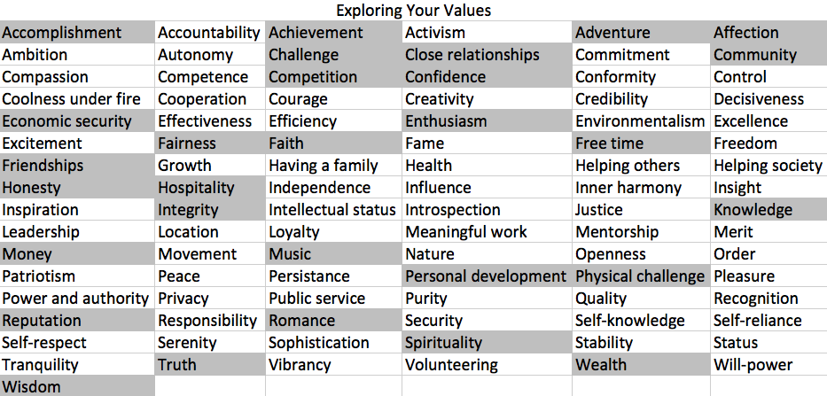

CHRISTOPHER HUI
10/7/2014
6:44 PM
When I think of the happiest, proudest, or the most satisfied times of my life, I think of the shaded values below.
It was hard to narrow down all these values and pick two, but the ones I chose to write about are community and physical challenge.
I value community because I believe it is ultimately what shapes us to be the people we are. The environment and the people we surround ourselves with will influence certain habits and interests. It is important to me to surround myself with people who will positively impact my life. In regards to Dev Bootcamp, I look forward to be surrounded with a community like-minded people who have a passion for programming.
I also value physical challenge because I love physical activity. When I was younger, I played a lot of basketball and I wrestled for a brief stint in high school. I picked up rock climbing, backpacking, hiking, etc. in college too. More recently, I’ve spent more time in the gym lifting weights. I’m not talking about bicep curls or machines, but rather, olympic lifts, like squats, dead lifts, bench press, etc. I’ve always liked to push my body to exhaustion in order to become faster and stronger. I also think it’s important to challenge ourselves physically in order to continue to grow stronger and have healthy bodies. I also love beer, so I need the exercise to offset those extra calories and carbs :)
The reason why I picked those values are because I try to live up to them. With that said, I would answer 5(agree) for all of them.
I believe a way to negate stereotype threats is to remember that we are all different and unique individuals. Each person is able to express themselves with their own interests, hobbies, or values. I may be a young Asian-American male, but I am unique from everyone else in the world. I am my own person with my own values. I feel what I value determines who I am as a person. I think that realizing and focusing on your own personal values can help mediate stereotype threats. I, personally like to take my mind off problems when they arise. I like to lift, so I like to take out my frustration and anger on a barbell. Then after the frustration is released, I like to think what on the situation and see what happened.
Well, that’s it for this blog. I hope you were able to get to know me a little better through this week’s blog. Until next time!